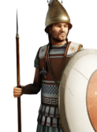
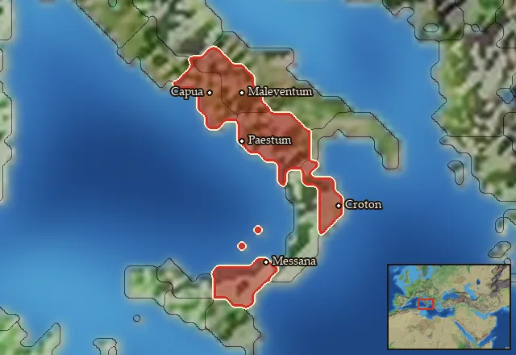

Oscan Hoplites


Class: spearmen · Category: infantry · Men per unit: 40
Description
Oscan Hoplites are very heavy infantry, who use the best protection available. They are clad in the panoply of the Greek elite, including large aspis shields, long stabbing spears, bronze greaves, and belts. In terms of armour, they wrap themselves in linothorakes, triple-disc or muscles cuirasses. These men wield their spears to lethal effect and present an almost impenetrable and solid frontline to rebuff the attacks of their enemies.
Historical background
Although renowned for their vigorous, agile skirmishing and viscous light infantry combat, the Oscans also made use of heavier warfare techniques, especially that of the hoplite phalanx. By 270 BC, the Oscan diaspora stretched from the north of Italy, next to the Etruscans near Volscinii, all the way southwest to the tip of the ‘boot’ of Italy, where they lived in a state of friction with the remaining Greek-Italiote holdings and Tarantines on the southeastern coast. Therefore, they were no strangers to fighting those who donned Greek hoplite panoply and its related modes of combat. Many of the Oscan elites, therefore, especially those living in the north and south, adopted these expressions of military prowess. This Greek influence was not always the result of an encounter at the end of a sword. On some occasions, wandering Oscans were voluntarily absorbed into towns such as Palaeopolis (later known as Neapolis, modern Naples), where the Oscan migrants intermingled with the Greeks and even became part of the local socio-political elite (Fields et al., Caudine Forks (2020), p. 13). Strabo (5.4.7) supported this idea, describing them as “a mixture of Campanian with the Grecian names”. The Oscan’s arrival in Campania during the 430s and 420s BC often meant them taking over existing Etruscan towns and institutions. The town of Nuceria, for instance, had existed from at least the 6th century BC (Farkas, Leadership among the Samnites (2006), p. 195). Moreover, the Oscan Campanians who conquered Capua often continued to allow defeated noble Etruscans some degree of participation in political life, as Etruscan names still appear in records long after their capitulation (Farkas (2006), p. 136). This would certainly have allowed for a mix in elite military styles and equipment to have emerged over time.
As elites, these Oscan Hoplites could afford the finest defensive equipment, and the variety of choices at their disposal have been represented in RIS as much as possible. The physical evidence for Oscan Hoplites is very compelling, as many references to their existence have been found all over Italy. A Campanian red-figure neck amphora (Trieste, Museo di Storia ed Arte, inv. 5383), attributed to the Astarita Painter and dated to c. 340/330 BC, shows an Oscan warrior standing to the right of his mother, who is offering him some refreshment, whilst he is holding a spear and an aspis shield, and wearing an Oscan-style tunic with short sleeves and a rounded neckline, and a crested, possibly Attic-style, helmet with three tall feathers (Fields et al. (2020), p. 11). Depending on which particular type of Oscan they were, sometimes equipment was also buried with slain elite warriors. For example, two different warriors buried in tomb 669 at Lavello showed a variety of different trappings. The first, earlier burial from the 4th century BC, contained an Apulo-Corinthian helmet, round hoplite shield, and bronze leg guards. Later, during the end of the 4th or early 3rd century BC, the tomb was reopened, the earlier burial and its goods were surreptitiously moved aside and replaced with a newer body together with greaves, a belt, and 18 spears and javelins, but more importantly for this case: a Montefortino helmet, as well as a quintessentially Greek-style bronze muscle cuirass (Bottini and Fresa (eds.), Forentum II (1991), pp. 52-61; Burns, The Cultural and Military Significance (2005), p. 49). The pilos helmet also makes an appearance, in a Lucanian krater (wide brimmed type of Greek vase) in Vienna, dated to 380-370 BC, which depicts a warrior with a pilos helmet and a broad bronze belt (Trendall, The Red-Figured Vases (1967), p. 413).
Armour choices varied, but Oscan Hoplites likely had access to many different types. Linothorakes are probably the hardest type to find in the archaeological record, as their linen construction does not lend itself well to preservation. However, depictions of Oscans wearing them can be found in Naples, with a temple wall painting from the Italic Temple of Cumae/Naples dated to the 4th century BC clearly showing a warrior in hoplite panoply with greaves, a feathered pseudo-Corinthian helmet, and a linothorax for protection. Many Campanian representations of hoplites, including the Campanian red-figure amphora by the Libation Painter (Capua II, 340-330 BC, R. K. collection Hessen, since 1980) and the red-figure bell krater, attributed to the Painter of B.M.F 229 (c. 330-310 BC from a private collection), show the Oscans wearing their iconic triple-disc cuirass, too. Overall, these Oscan Hoplites display a huge variety of different types of armour and helmets, because Oscan elites could afford essentially any style of equipment that they desired.
Stats
| Rank in roster | ||
|---|---|---|
| Men per unit | 40 | ███······· 30% |
| Attack | 16 | ████████·· 80% |
| Charge bonus | 16 | ██████···· 63% |
| Defence | 44 | █████████· 86% |
| · armour | 9 | █████····· 50% |
| · defence skill | 30 | █████████· 94% |
| · shield | 5 | ██████···· 56% |
| Morale | 12 | ██████···· 57% |
| Discipline | Normal | |
| Training | Highly trained | |
| Recruitment cost | 1,810 dn | ████······ 37% |
| Upkeep per turn | 660 dn | ██████···· 55% |
| Turns to recruit | 3 |
Weapons
| Primary | Secondary | Primary | Secondary | Primary | Secondary | Primary | Secondary | ||||
|---|---|---|---|---|---|---|---|---|---|---|---|
| Attack | 16 | 11 | Type | thrown · blade | melee · blade | Projectile | javelin | — | Ammunition | 2 | — |
| Charge bonus | 16 | 16 | Damage | piercing | piercing | Range | 50 | — | Properties | Used just before charging into combat | Light spear (braced against cavalry charges from the front) · +8 attack against cavalry |
Defence
| Primary | Secondary | Primary | Secondary | Primary | Secondary | Primary | Secondary | ||||
|---|---|---|---|---|---|---|---|---|---|---|---|
| Total | 44 | — | Armour | 9 | — | Defence skill | 30 | — | Shield | 5 | — |
Condition and terrain
| Hit points | 1 | Ground: scrub / sand / forest / snow | -1 / -1 / -4 / -1 | Charge distance | 30 | Formations | Square |
Technical stats
| Time between blows (primary / secondary) | 2.5 s / 2.5 s | Collision mass per man (1.0 is normal) | 1.18 | Spacing between men: close / loose | 1 × 1.05 m / 2 × 2.4 m | Default ranks | 5 |
| Extra fatigue in hot climates | 2 |
In battle: Can sap · Very good stamina
Who can recruit it
A core roster unit for 2 factions, each able to raise it anywhere they hold the right building:
Any faction holding one of the provinces below can field it.
Exactly what a settlement must have, route by route (3)
| For | Building | Also requires | For | Building | Also requires | For | Building | Also requires | |||
|---|---|---|---|---|---|---|---|---|---|---|---|
| Bruttians, Lucanians | Direct Rule | Tier 2 Military Industrial Complex · Tier 2 Colony | Bruttians, Lucanians | Homeland | Tier 2 Military Industrial Complex | Every faction except Bruttians, Lucanians (area-of-recruitment unit) | Any settlement | Tier 2 Military Industrial Complex · Oscan area of recruitment · not Samnite area of recruitment · not Campanian area of recruitment · Dependency or Indirect Rule · Tier 1 Colony not built |
Areas of recruitment

| Zone | Provinces | ||||||
|---|---|---|---|---|---|---|---|
| Oscan | 5 |